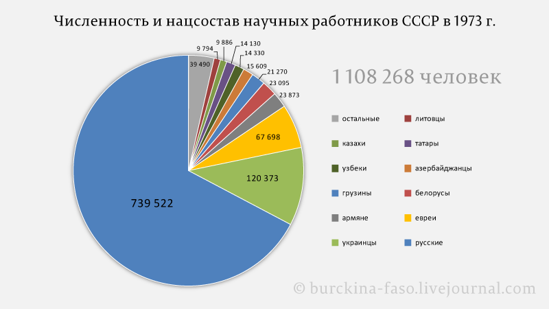
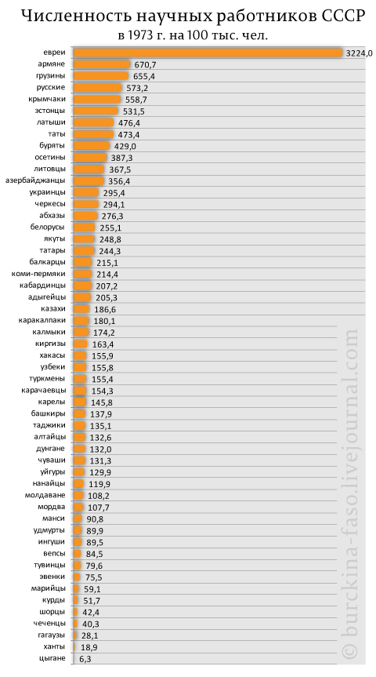

Национальный вопрос в советской науке
31 марта, 11:04

Интересная статистика у товарища Буркина-Фасо на тему национального вопроса в советской науке.
Национальный вопрос в советской науке
Или какая национальность делала науку в СССР? Для начала общие цифры по числу научных работников в СССР 1973 года:

Всего ученых тогда было 1,1 млн. человек. Из них было большинство русских или 2/3 от всей численности. Далее идут украинцы, евреи, армяне, белорусы и т.д.
Более интересная картина разворачивается, если посмотреть число ученых относительно численности народа своей национальности. Тут пальма первенства за евреями:

3,2 тыс. ученых на сто тысяч. Т.е. 3% евреев - научные работники. Далее идут армяне, грузины и русские. Меньше всего ученых среди цыган.
http://burckina-faso.livejournal.com/1508908.html - цинк